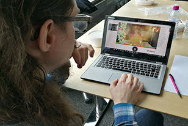

Back

Thesis
A concept about how to improve communication and the experience of social live streaming platforms. I have written the thesis by myself and been following the practice of interaction design/user-centered design,
with an empirical work and research based on published papers. The prototype is programmed in processing.

The conclusion, is that the experience of a social live streaming could be improved if basic chat communication is supplemented with a similar function to a snapshot a of the viewer. The relation to the individual faces of those who watch makes the communication more similar to person to person communication with results in a more natural communication and better experience of the platform.
# interactiondesign #UX-design #userresearch #concept # mocups #prototyps #UserTesting